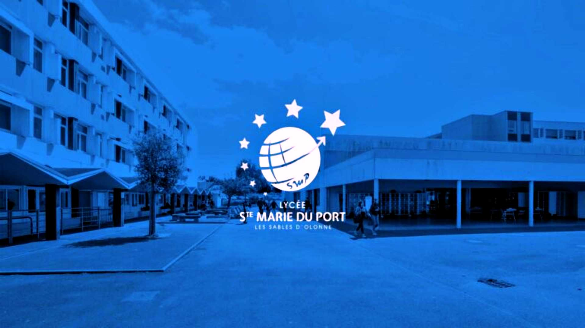

Portfolio : Intranet
Team

Thibault Le Tallecclose
Young man (18 years old), student at this moment, and a proud passionated personn. I started to be insterested by programming and game development when I was 14 - 15 years old. Now, this is a real passion, and I clearly want to build my life around this... Then, the best way I found to learn and improve is to do projects, again and again. Here's some of my firsts that I like.
Il faut également préciser que nous avons été énormément aidé par notre professeur d'informatique : Renaud Coutray de Pradel, sans qui rien n'aurait été possible. Donc grosse mention d'honneur.